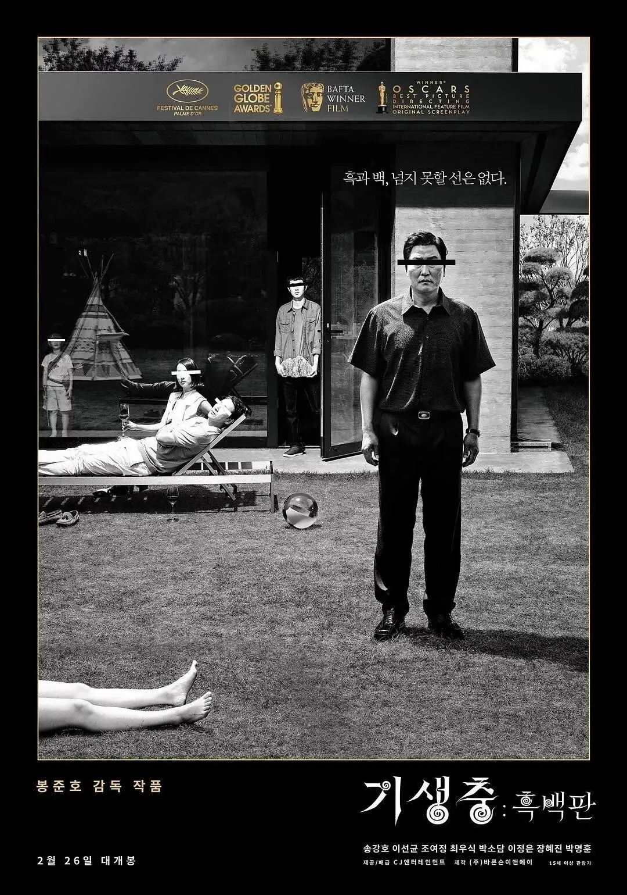
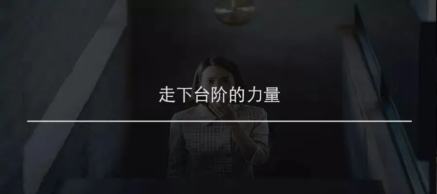

作者：二斤
前天奥斯卡结果出来了，不少朋友的意见是，“这也能拿奖？《寄生虫》不咋样啊？也能拿奖？”
除去少部分影迷酸的部分，大部分持有这种观点的人都是一年看不了几部电影，对韩国电影工业没什么了解的人。
其实，学院哪是把奖颁给奉俊昊，这是把奖颁给整个韩国电影啊。
韩国电影诞生之初就带着一股拧劲。
1919年日治时期韩国第一部电影《义理的仇讨》公映。
接着为了对抗早川孤舟抢拍韩国名著改编的《春香传》，朴晶炫立马以全韩资金及班底拍摄了《蔷花红莲传》作为反击。
1926年罗云圭更是自导自演了《阿里郎》来抗击日治政府，越来越多的年轻人把电影当作了武器，进入电影圈。
1935年日本电影在韩国票房占比70%而本土电影只有4%，在这种政治和文化被双重碾压的情况下，韩国电影依然顽强生长。
二战后经过朝鲜战争、李承晚、朴正熙、全斗焕等一系列独裁政府，1987年卢泰愚上台后，韩国电影迎来了光明。
1988年韩国政府修改电影法，之前的剧本先行审查制度取消，外国进口电影配比也同样被取消。
可韩国电影去掉了审查的枷锁后迎来的是更恐怖的好莱坞电影，90年代初《人鬼情未了》《狮子王》《真实的谎言》把韩国电影人打的一塌糊涂。
韩国电影人放弃抵抗了吗？没有！
1993年金泳三上台，进一步给韩国电影解绑，同年制定了《电影振兴法》并于1996年第一次修订，规定韩国行政审议制度即日废止，同时电影分级制度正式施行。
解绑的效果同样得到了韩国电影人的积极响应，1993年韩国电影教父林权泽重拳出击，《悲歌一曲》创下首尔100万人次观影记录。
96年康佑硕《两个警察2》挤进韩国市场票房前十名，世纪末韩国大导演姜帝圭《生死谍变》一举打破韩国观影记录，新千年，韩国电影正式起跑。
相对于90年代韩国电影还在自己的窝里挣扎，我们的电影足够让韩国电影人跪下叫爸爸。
老生常谈的《霸王别姬》《活着》《大红灯笼高高挂》不说，奉俊昊评选个人电影前十第一名就是侯孝贤的《悲情城市》，杀人回忆也有对牯岭街的仿作痕迹。
更别提在同样的日侵背景下，我们拍出了《鬼子来了》而韩国电影依然没有探讨日治时期2.0乃至像姜文这样探讨3.0的东西。
但是不同的是什么？
新千年之后，我们和韩国同样进入了商业市场的轨道，我们的大部分电影人在探索什么？韩国的电影人在探索什么？
我们在探索大片！大制作！大的形式主义的东西！
韩国电影人在探索类型片！在探索电影艺术！在探索人性及社会话题！
你可以举我们的电影人有枷锁，但是枷锁更大的伊朗，阿巴斯拍个《何处是我朋友》都有一群阿亚图拉审核的地方法哈蒂不照样拍出了《一次别离》？
况且韩国人虽然丢开了审查的枷锁，遇到的是更大的怪物，美国当局！
1998年为了抗议韩国政府相应美国政府进一步降低电影放映配额的措施，众多电影人发起了“光头运动”。
2006年布什政府向韩国政府发出最后通牒“要么选择减少（本土）电影义务上映时间，要么完全否定韩美自由贸易谈判”，当年7月，韩国电影配额放映被迫减少73天。
但立马在台的卢武铉提交了电影扶持计划，提供5年4000亿韩元发展电影产业，截至2006年年底韩国电影在劣势的情况下依然掠下63%的占比。
韩国电影工业发展越来越强，但是电影不仅仅是工业商品，还是艺术表达的阵地，套用周星驰的话“如果电影像商品一样，那么和咸鱼有什么区别？”
新千年之后，韩国电影除了在电影工业上发展迅猛，类型片也是玩的越来越溜，同时在艺术性的探索上也没有停止脚步。
前面提过了韩国电影教父林权泽，2002年带作品《醉画仙》冲击戛纳电影节最佳导演奖成功，2005年因为对于电影行业巨大的贡献获第55届柏林电影节名誉金熊奖。
接下来就是鼠来宝了，2002年李沧东《绿洲》威尼斯电影节最佳导演，2003年朴赞郁《老男孩》评委会大奖。
2004年金基德《空房间》威尼斯银狮奖，同年《撒玛利亚女孩》拿下柏林银熊奖，2007年大师气象李沧东《密阳》拿了戛纳影后并进入主竞赛，2009年朴赞郁《蝙蝠》戛纳评审团大奖。
2010年李沧东《诗》戛纳最佳编剧并进入主竞赛，2012年金基德《圣殇》金狮奖，2017年洪尚秀《独自在那夜晚的海边》柏林影后。
其中还没提东京电影节以及韩国本土青龙奖，像罗宏镇《哭声》这样的神片还没有加进来。
拉了这么大一大串的片单，你还认为今年戛纳把金棕榈给奉俊昊是巧合么？
这是特么韩国电影人一起人叠人越特么龙门啊！
一次又一次冲击，周而复始，乐此不疲的冲击！
他们商业电影里有《恐怖直播》，《釜山行》，《汉江怪物》这样的佳作，人家艺术电影也没闲着呀！
人家都捧杯了，咱们还在这里在电影里提个老塔的《伊万的童年》就自以为艺术家自我感动来着！
当然奥斯卡这个奖颁的我意外，和朋友打赌今年我基本上把宝都压在《1917》上了，但是我输的开心！
固然在我看来《寄生虫》算不得奉俊昊生涯最佳，甚至在我的序列里是要在《杀人回忆》和《母亲》之后的。
但是韩国电影人像叠罗汉摘花一样的行动告诉我，这个最佳电影，这个美国电影学院奖给的不亏！
这是给整个韩国电影的奖啊！
为啥《寄生虫》可以得到共鸣，拍的好啊！
不过咱也不能气磊，北美外语片影史第一票房还握在咱们《卧虎藏龙》手里。
为啥《卧虎藏龙》可以拿那么高的票房，拍的好啊！
最后还是向奉俊昊献上迟到的恭喜。
孙兴慜踢的好，特么奉俊昊又创造了历史。
韩国电影就是拧。
-END-
推荐阅读
▼
（点击图片即可获取全文）

这里没有挑逗你眼目情欲的小鲜肉
也没有挑动你肉体情欲的段子
更没有膨胀你今生骄傲的鸡血
我们只在乎那些最质朴真诚的作品
在那里我们才能恢复真正的想象力
我们也坚信这才是我们真正需要的

ID:Six_hundred_hits
长按二维码，一键关注
【六百击】
电影评论
尽情分享朋友圈

微信二维码打赏通道
特别提醒：文中图片来自网络，版权归原作者所有，如有侵权请立即与我们联系,我们将及时删除。